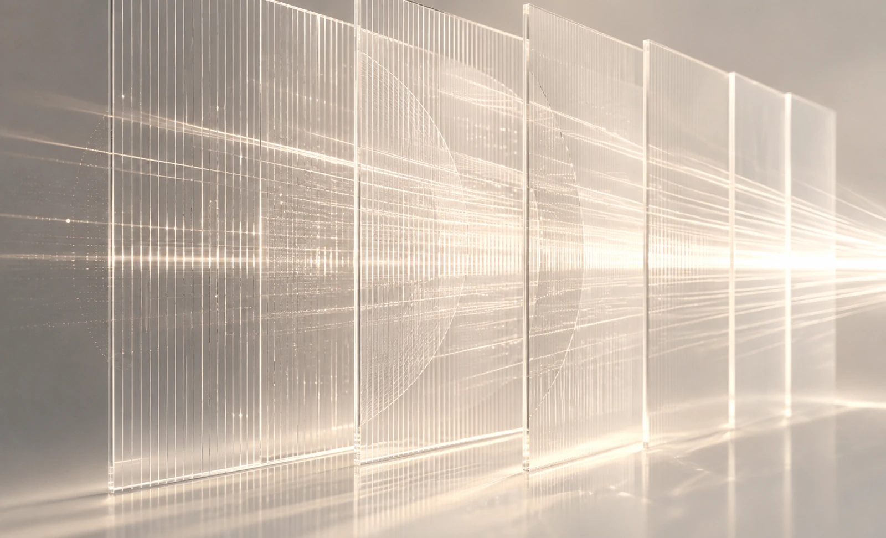
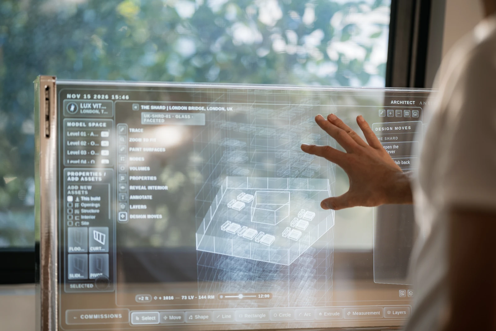
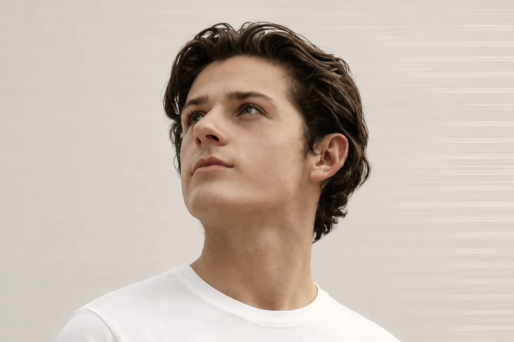

Where it all started
What would a computer look like if you could see your work and the room around it at the same time? In Los Angeles, we’re exploring that question in glass.


Light of life
Lux Vitae takes its name from the Latin for “light of life.” Our star marks the first glimpse of the sun over Earth’s horizon. Look closely at that horizon and you can see the thin band of atmosphere where every human life unfolds.
That view informs a practical choice in our studio. A screen occupies a place at your desk. Making it transparent lets the light, the people, and the things you’re working on stay in sight.

The name looks back to the Antikythera mechanism. More than two thousand years ago, Greek craftspeople fitted bronze gears together to model the movements of the heavens. Something as vast as the sky could be understood through an object made by hand.
What draws us to that instrument is the care that went into making it. We want ANTIK to be a computer someone will look after, maintain, and one day pass on.

Our founder’s note
“The name is a reminder that the most advanced object in the room can also be the most timeless one.”
